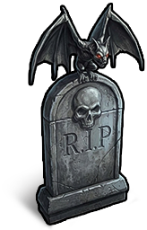

Other
Items · OtherAbode of Dreams (Tombstone)

Abode of Dreams (Tombstone) / OtherCrafting recipe
Crafting recipeEach crafting batch produces 1 items. Materials below are required for one batch.

Recycling yield
Recycling yieldItem description
An ancient stone pedestal, shrouded in the quiet magic of the night.